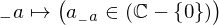
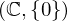

Expression of type And¶
from context proveit.number.multiplication¶
In [1]:
import proveit
# Automation is not needed when building an expression:
proveit.defaults.automation = False # This will speed things up.
proveit.defaults.inline_pngs = False # Makes files smaller.
# import Expression classes needed to build the expression
from proveit import ExprRange, IndexedVar, Variable
from proveit._common_ import a, n
from proveit.logic import And, InSet
from proveit.number import one
from proveit.number._common_ import ComplexesSansZero
In [2]:
# build up the expression from sub-expressions
subExpr1 = Variable("_a", latexFormat = r"{_{-}a}")
expr = And(ExprRange(subExpr1, InSet(IndexedVar(a, subExpr1), ComplexesSansZero), one, n))
Out[2]:
expr: 
In [3]:
# check that the built expression is the same as the stored expression
%check_expr
In [4]:
# Show the LaTeX representation of the expression for convenience if you need it.
print(expr.latex())
In [5]:
# display the expression information
expr.exprInfo()
Out[5]:
| core type | sub-expressions | expression | |
|---|---|---|---|
| 0 | Operation | operator: 1 operands: 2 | |
| 1 | Literal |  | |
| 2 | ExprTuple | 3 |  |
| 3 | ExprRange | lambda_map: 4 start_index: 5 end_index: 6 |  |
| 4 | Lambda | parameter: 13 body: 7 |  |
| 5 | Literal |  | |
| 6 | Variable |  | |
| 7 | Operation | operator: 8 operands: 9 |  |
| 8 | Literal |  | |
| 9 | ExprTuple | 10, 11 |  |
| 10 | IndexedVar | variable: 12 index: 13 |  |
| 11 | Operation | operator: 14 operands: 15 |  |
| 12 | Variable |  | |
| 13 | Variable |  | |
| 14 | Literal |  | |
| 15 | ExprTuple | 16, 17 |  |
| 16 | Literal |  | |
| 17 | Operation | operator: 18 operand: 19 |  |
| 18 | Literal |  | |
| 19 | Literal |  |